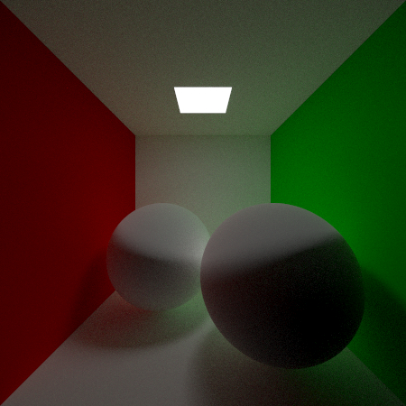

簡易画像加工ソフト

CGレンダラー
私は漫画に用いられるテクノロジーに興味があり、これまで基本的な2D画像処理や写実的な3DCGのレンダリング技術について勉強をしてきました。
その過程で上記の簡易的な画像加工ソフトやCGレンダラーを、C++を用いて作りました。 この画像加工ソフトはグレースケールのみ対応していて、ぼかしや輪郭検出、閾値処理、鮮鋭化、ディザリングなどが行えます。 CGレンダラーでは素材はザラザラした面や鏡面、形状は球体、面、三角形を設定できます。現在勉強しながら開発を進めているものです。
この二つを勉強してきたことにはもう一段階理由があります。画像処理については実際の写真を加工し漫画の背景として使う技術に興味があったためです。CGのレンダリング技術については、 この技術の応用例としてPhysically-based Feature Line Renderingという漫画に使用できそうな技術の存在を教えていただいたためです。
2D画像処理については参考書を用いての独学ですが、3DCGのレンダリング技術については独学に加え、大学1年生の頃から研究室に赴いて教授に直接教えていただくなどして勉強しています。
また、上記に加えてWeb制作でのReact、Vue、Flask、Firebaseの使用経験や、プログラミングサークル内のハッカソンでの共同開発の経験があります。